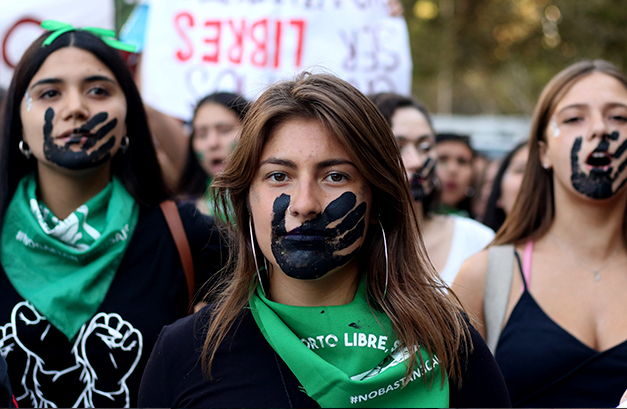

El odio a las feministas
Odio injustificado
Durante bastante tiempo, quienes se oponen al feminismo han afirmado que el movimiento se basa en la misoginia: el prejuicio, el desprecio o el odio contra los hombres. Los hombres que no se dan la molestia de informarse respecto al tema, dicen que las mujeres de ser posible acabarían con los hombres.
El odio es mas que nada por los daños que pueden llegar a causar, ya que su forma de protestar es la iconoclasia, la cual es la destrucción de imágenes, especialmente religiosas, o monumentos. Esto NO es vandalismo, pues la iconoclasia tiene un propósito el cual es expresar disconformidad ante lo que se siente.
Muchos hombres dicen que las feministas actuales no son feministas y que las de antes si lo eran, esto lo dicen por que antes las mujeres eran mas oprimidas y tenían que depender de un hombre.
Aunque esto también es ironico, pues las feministas de antes tenían un movimiento que se llamaba sufragistas, se dedicaban a quemar edificios, atacar ferrocarriles, esto para obtener derechos. El feminismo es bueno, pero algunas personas van en contra de este movimiento ya que dicen que las mujeres luchan por "superioridad" cuando no es asi, al dia de hoy hay demasiados feminicidios y salir a las calles sigue siendo igual de peligroso, se lucha por que se respeten estos derechos y se detenga el machismo.
Hay mucho odio injustificado para el feminismo, lo odian simplemente por según "vandalizar" monumentos, cuando muchos grafitean casas sin permiso y algunos hombres simplemente dicen que son exageradas, cuando algunos ni saben lo que es que muchas mujeres mueran año tras año sin que se pueda hacer nada.
Muchos comparan a los que fueron a guerras para minimizar lo que muchas mujeres sufrieron, siguiendo el ejemplo de la guerra muchas mujeres tenían que intoxicarse por hacer las balas que se usaban, realmente ambos géneros sufren, lo que esta mal es que hagas de menos un movimiento solo por estar hecho de mujeres.

Pagina principal